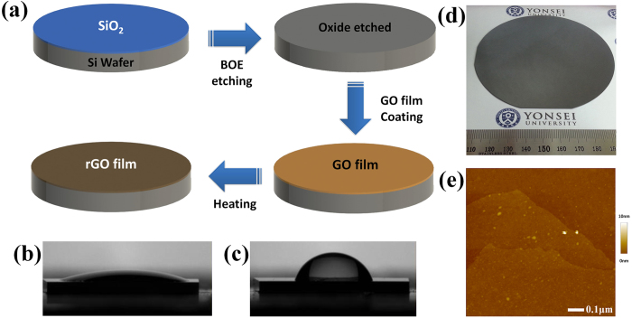

Research context and placement
The abstracts support silicon-based GO reduction and film formation, not deformable-interconnect attachment. Retain routing foundations.
Boundary case: assigned to the closest interface for navigation. Read the rationale and cross-links together; the primary theme does not delimit the study. Placement of foundational work does not establish direct bioelectronic application.
Research overview and key contributions
Silicon nanosheets reduce GO; silicon wafers serve as reducing templates for rGO films.
The approach links reduction to film formation while avoiding impurities from conventional chemical reductants.

Graphene oxide is coated onto oxide-stripped silicon and reduced upon heating, with accompanying film observations.
Su Chan Lee, Surajit Some, Sung Wook Kim et al.. “Efficient Direct Reduction of Graphene Oxide by Silicon Substrate”. Figure 1. DOI: 10.1038/srep12306. CC BY 4.0. Public original image copied byte-for-byte, with no resizing, cropping, annotations or re-encoding.
Source figure and caption ↗ · DOI: 10.1038/srep12306 ↗ · CC BY 4.0 ↗
Open challenges
Editorial question: how do residual oxygen, silicon-interface species and film uniformity govern electrical performance?
Comparison context
Match reduction extent, thickness, substrate treatment, sheet resistance and optical-transmittance measurement conditions.
Related external research
Large-area ultrathin films of reduced graphene oxide as a transparent and flexible electronic material
The external abstract relates solution-deposited rGO thickness to optoelectronic behavior, complementing #23’s reducing-template strategy.
Different reduction chemistry and thickness prevent attributing conductivity differences solely to silicon reduction.
Abstract checkedCorresponding-author verification
Jungmok Seo: not a corresponding authorThis record concerns Jungmok Seo’s correspondence designation. Author order or an asterisk alone is not treated as confirmation; this check is separate from verification of the research content.
- Correspondence evidence source ↗
Surajit Some: xref ref-type="corresp" rid="c1"; Seong Chan Jun: xref ref-type="corresp" rid="c2"
contrib-group xref[@ref-type="corresp"] and author-notes/corresp c1–c2 · Named publisher author/correspondence information or public published-PDF contact block read; selected body/figure scope is recorded separately.
- Main-text review scope
- Publisher/PMC article license and complete Figure 1 caption actually read; original Figure 1 visually inspected. Selected body context read; not a complete methods/supplement audit.
- Supplementary review scope
- Not read in this figure/correspondence pass; no complete SI audit claimed.
- Pending verification
- Check reduction evidence, electrical measurements and large-area uniformity in school Chrome. This pass verifies figure rights and correspondence roles. Selected-body/abstract review does not establish completion of full methods and supplementary-material review. The paper is not a verified Jungmok Seo correspondence paper and is outside this deepening priority.
COVERAGE & OUTREACH
Coverage and outreach
Links are checked for their relationship to this paper. Media publication does not establish independent reporting or additional experimental validation.
[Acceptance] “Efficient Direct Reduction of Graphene Oxide by Silicon Substrate” ↗
The paper title, Jungmok Seo as coauthor and Scientific Reports match the publication.
Body read Read the dated individual acceptance announcement. This is a lab announcement, not independent reporting.
Sources and verification scope
Crossref and Europe PMC/PubMed abstracts were read; detailed reaction/characterization sections remain unchecked.
- Public publication baseline ↗ · #23 · 2026-10-03
- Crossref metadata ↗: Only public bibliographic metadata registered with Crossref was checked. This does not mean that the publisher page, abstract, or full text was read; full-text verification in the school Chrome session remains pending. license_urls lists registered links and does not establish permission to redistribute text or figures. It may include TDM or posting-policy links.
- Crossref — publisher-supplied abstract ↗
publisher_registered_abstract_via_Crossref · message.abstract; actually read 2026-10-03; publisher full text not implied - Europe PMC — PubMed abstract record ↗
public_abstract_via_Europe_PMC_API · resultList.result[0].abstractText; DOI matched; read 2026-10-03